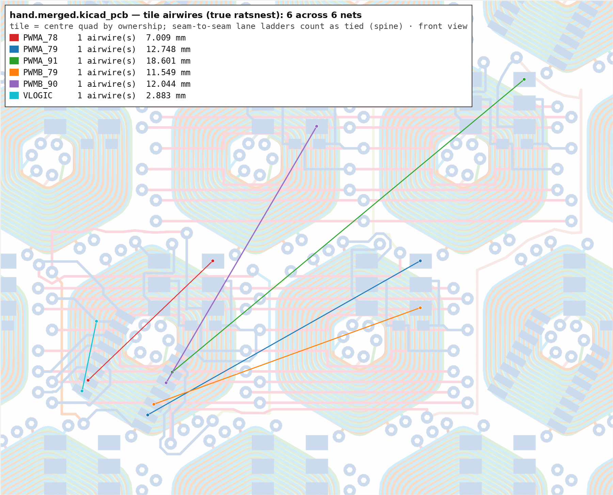

The pipeline's verdict stands at 18/24 nets with six missing, freerouting scores 0.00 on every one of them, and the constructor holds measured death proofs at this register placement. What the machines could not renegotiate, a mouse can: every routed track of the stamp is yours to keep, move, or rip up — the gates re-verify the whole stamp from scratch every time.
Route in pcbnew, save, run ./hand.sh check. Nothing you do in
the editor is trusted until the gates say so.
cd route
./hand.sh build # once (already done): hand.kicad_pcb + hand.kicad_pro
kicad hand.kicad_pro # route; SAVE in pcbnew before checking
./hand.sh check # extract -> tilecheck -> merge -> coilcheck -> DRC
# -> 42x clone + interior DRC -> true ratsnest
./hand.sh rebuild # after a green check: refresh the neighbour images
# so YOUR new copper's periodic images become walls too
QUICK=1 ./hand.sh check # skips the clone + full-board DRC + ratsnest
What you see in the editor:
handses.py
extracts, and the extracted hand.union.ses is the durable artifact
(the board files are all regenerated from it). Bank good states:
cp hand.union.ses hand-$(date +%m%d).ses.hand.kicad_pro);
the board starts DRC-clean, so every live violation is yours.The gates, in order, and what each one alone can see:
| gate | catches |
|---|---|
handses.py (extract) | copper on nets the stamp does not own — a track that wandered into a neighbour quad and picked up its net |
tilecheck | the stamp against its own 8 lattice images, net-aware — including your new copper against its own images, which the editor cannot show until a rebuild |
coilcheck | same-net shorts no DRC can report: copper crossing its own coil's winding, tab chords, welded via lands |
| KiCad DRC (merged) | everything cross-net on the real 14-layer board |
| 42× clone + interior DRC | the stamp meeting the whole board: 668 rim violations are expected spine-territory junk (they reach 5.06 mm in, never deeper); interior must stay 0 |
airwires.py | the true ratsnest (the DRC report caps at ~500); prints CLOSED / open / NEW MISS against the six |
All six are register-pocket escapes. Endpoints in board millimetres, from the live connectivity graph.
| net | from | to | span | what it is |
|---|---|---|---|---|
| VLOGIC_CE | 62.93, 65.98 | 62.35, 68.80 | 2.9 mm | SR21 pad 16 (CE̅) to VLOGIC — the shortest and the most walled |
| PWMA_78 | 67.68, 63.54 | 62.60, 68.37 | 7.0 mm | SR pad 14 stub to U78.6's pocket |
| PWMA_79 | 76.14, 63.54 | 65.02, 69.77 | 12.7 mm | SR pad 13 to U79.1 |
| PWMB_79 | 76.14, 65.44 | 65.27, 69.33 | 11.5 mm | SR pad 5 to U79.5 |
| PWMB_90 | 71.91, 58.11 | 65.77, 68.47 | 12.0 mm | SR pad 7 to U90.5 |
| PWMA_91 | 80.38, 56.21 | 66.02, 68.03 | 18.6 mm | SR pad 3 to U91.1 — the long diagonal |

./hand.sh check, so it always shows what is left.Ordered by hand-routing odds. Every proof below froze the other 18 nets' copper in place — you are allowed to renegotiate that. Ripping up a committed drop or moving a hug to a different winding layer re-opens corridors the proofs declared shut; the gates re-verify everything, nothing remembers the old shapes.
A full measured corridor exists in lanegen.mjs: In9 wedge along cell
78's SE diagonal, the y≈69.66 thread (the only In-layer line past J66.IN), hug down to
cell 90's south vertex, SE-diagonal exit north of the 70.71 crossover, In12 to the
90|91 hug, band NN, and the U90 inter-column channel into pad 5. The construction
withdrew on via-site legality (its junction/rise sites failed the prober), not
on the corridor. A human placing the three vias by eye, against live DRC and the
images, is exactly the move the machinery could not make.
Flood-proven: any north–south line in the 1.5 mm west-face strip (x 60.5–63.5) crosses all five committed west drops, so its B.Cu climb is mutually exclusive with them. But inner layers ignore B.Cu copper entirely — only via barrels block them. An In-layer rise from a legal gutter via, over the drops, is the unexhausted direction; the catch is finding a via site that clears the seam ladder (0.59 via–via) and whose own east image (x +16.93) lands clean.
Pad 16's under-body channel is statically shut at bay-gate 38°, and outside approaches are sealed by the power combs: the VBUS riser at x 66.09, the GND tooth, and the via-link. Short enough that a small renegotiation of one comb tooth (unlocked stamp copper!) may open it — the comb shape was chosen by the generator for clearance, not sanctity. Anything you move must still verify: combs feed every cell, so watch the ratsnest for NEW MISS lines.
The 90/91 quartet's dives sealed its only thread crossing, and U79.5's pocket faces are walled by C79's pads and the GND tooth and the jMid via pair. The C79/GND geometry is fixed, but the quartet's dives are stamp copper — re-shaping them is the only known line of attack.
Every constructible corridor to U91.1 is measured shut: the E-seam jB zone, the channel mouth, and the west face are all one x-period apart, so they are one column in the alias frame — three nets' worth of geometry cannot share it, and PWMB_91 got the slot. Freeing it means re-routing PWMB_91's rise, which was itself the survivor of a long fight.
Its verified In11 chain exists (gated behind FABRIC_A79) but can never
tile: the W-hug entry thread is triple-sealed by PWMB_78's drop, the board via at
(61.78, 70.18), and PWMB_91's band-NN rise image; cell 78's SW hex floor
closes the detours, and a W-box drop's own image lands on PWMB_91's pinch. The proof
assumes PWMB_78's and PWMB_91's current copper — same caveat, steepest odds.
JLCPCB 14-layer, 1 oz. The hand.kicad_dru beside the
board enforces all of this live.
| quantity | floor | centre-to-centre for 0.1 mm tracks |
|---|---|---|
| track width | 0.09 mm (route at 0.1) | — |
| copper clearance | 0.09 mm | track–track 0.19 mm |
| via (through only) | 0.5 mm land / 0.23 drill | track–via 0.39 mm, via–via 0.59 mm |
| hole to copper | 0.2 mm | — |
| hole to hole | 0.2 mm | — |
| copper to board edge | 0.2 mm | — |
Layer geography:
./hand.sh rebuild — tilecheck sees them anyway. The classic form:
one net may not have copper in two bands of the same x-column one period apart
(lattice: 16.9333 east, 14.6647 north/south). The west face
(x 60.5–63.5) and the E-seam zone (x 77.4–80.4) are the same column in
the alias frame; band NN aliases band S exactly. Check often, rebuild
after every landed connection.